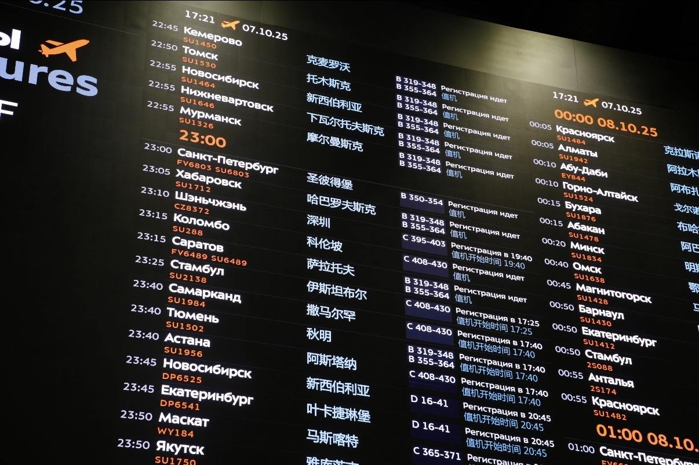

By David
Is led display wholesale from a China factory worth it? For distributors, wholesalers, and rental companies, buying led display wholesale direct from a manufacturer usually beats buying through middlemen, because the factory controls the cabinet, the aging test, and the batch. But the real margin depends on quantity, batch consistency, and spares, not on the price alone. This guide explains how a distributor should start.
A wholesale buyer is not a retail customer. A retail customer buys one screen; a wholesale buyer buys for a market, a project pipeline, or a rental fleet. That changes everything about the deal: the price is negotiated against quantity, the cabinet is often customised, and the relationship runs for years. A factory that understands this sells differently from a shop that sells boxes.
This led display wholesale guide is written for distributors, wholesalers, system integrators, and rental companies. It covers the honest difference between buying direct and buying through a middleman, how quantity tiers and MOQ work, how mixed-container shipping is shared, why batch consistency matters, and how to plan spares with the order.
A trading company adds a margin and a layer. It may know the market well, but it does not own the production line, so it cannot change a cabinet, hold a batch, or answer a technical question at the source. When a distributor buys led display wholesale direct, the price reflects the factory cost plus one margin, not two markups stacked on top of each other.
Direct also means accountability. The factory that makes the cabinet, runs the aging test, and packs the container is the party responsible for the batch. When something goes wrong in the field, the distributor talks to the source, without a middleman passing the message back and forth and losing the detail along the way.
| Factor | Direct From Factory | Through a Middleman |
|---|---|---|
| Pricing | Factory cost plus one margin | Adds a second margin |
| Cabinet changes | Designed and built in house | Forwarded to a third party |
| Batch control | Same batch held and matched | Mixed from several sources |
| Technical answers | From the production team | Relayed second hand |
| Spares | Matched to the batch | Sourced after the order |
The quoted price is only the start. A wholesale buyer should think in landed cost: the screen, the cabinet, the flight case or packing, the freight, the insurance, the duty, and the cost of the spares held in stock. Two suppliers can quote the same unit price and land at very different totals once the container is filled and cleared.
The buyer should also weigh the cost of a bad batch. If the colour drifts between cabinets, the distributor absorbs the returns and the reputation damage that follows. A slightly higher price from a factory that controls the batch can be cheaper in the end than a low price that forces rework, replacements, and awkward conversations with customers.
Wholesale pricing is tiered by quantity. A factory reserves its best price for a full container, a smaller advantage for a part load, and the standard price for sample or trial units. The distributor should ask how the tiers are structured for the exact product, because a tier that suits one cabinet size may not suit another pitch or format.
A minimum order quantity protects the factory's setup cost for a custom cabinet or a custom pitch. The distributor should treat the MOQ as a negotiation, not a wall. A first trial order at a higher price can open the better tier for the repeat order, once the factory trusts the volume and the relationship is proven.
Freight is shared across the order, so the way the container is loaded decides the cost per square metre. A mixed container that carries several products can spread the freight across more value, but only if the cabinets are packed to fill the space without damage. An under-filled container raises the freight borne by every single unit.
The distributor should plan the mix before the order, not after. Packing LED cabinets alongside flight cases, spare modules, power supplies, and control systems is a loading question as much as a purchasing one, and a factory that ships regularly knows how to combine the load so the space is used well.
| Order Type | What It Suits | Freight Effect |
|---|---|---|
| Sample units | First trial, market test | Highest per unit |
| Part load | One product, moderate volume | Shared across the order |
| Full container | Repeat stock, mixed products | Lowest per unit |
| Mixed container | Several products at once | Spread across values |
A distributor should negotiate with a list of questions, not a single number. Price is one line in a deal that also includes the cabinet, the packing, the spares, the warranty, and the lead time. The factory that answers all of them in writing is easier to work with than one that only quotes a figure and leaves the rest to guesswork.
In a single screen, colour is easy. Across a shipping container, it is the hardest part of wholesale. LEDs vary between production runs, so cabinets made at different times can drift in brightness and colour. For a distributor, that drift becomes returns when a customer sees two screens side by side and the difference is obvious.
The answer is batch control: the factory holds one batch of LEDs, matches the modules, and builds the whole order from it. A distributor buying led display wholesale should ask how the batch is held and matched, and should request that repeat orders are matched to the earlier batch wherever the volume and the stock allow.
The quantity in the order is not the quantity in the field. A screen in service will need modules, power supplies, receiving cards, and cables over its life. A distributor who ships without spares pays for a second shipment later, with the freight cost and the delay that implies when a customer is waiting for a repair.
The spares should be bought with the batch, so they match it. A spare module from a different run may not match the screen it is sent to replace, which defeats the purpose. The bulk order should include a spares line, sized to the fleet the distributor serves and the failure rate of the products in it.
A distributor does not need to see the factory's books, but should understand what drives the price. The LED lamps, the drivers, the power supply, the cabinet and its finish, the control system, and the labour each carry a cost. Asking which parts are upgraded and which are standard turns a bare price into a real specification.
The question is not where the cost is lowest, but where the money goes. A cabinet with a better power supply and a heavier frame costs more and fails less. The distributor should ask the factory to explain the choices behind the price, then decide where the budget belongs for the markets being served.
A wholesale range usually spans more than one packaging. Asia Vision builds SMD, GOB, and COB displays, which lets a distributor serve different markets from one factory. SMD suits the widest range of indoor and outdoor work; GOB protects the lamps against impact for floors and high-traffic sites; COB gives a smoother surface with a wider angle for close viewing.
For tight-pitch indoor work, the factory runs 8 IC production lines and 7 LED SMT production lines, and has reached volume production on COB P0.93, a 0.93mm pixel pitch. A distributor can offer COB EF and COB CV Pro alongside rental and small-pitch lines, so the range fits several customer types without adding suppliers.
A wholesale deal is a relationship, not a transaction. The factory that supports the distributor after the sale protects the distributor's reputation in the field. Asia Vision provides a 2 year warranty and 24 hour technical support, which lets a distributor answer a customer quickly without waiting on a supplier or losing the sale to a delay.
The distributor should test the support before the big order, with a trial unit and a real question. A factory that answers well on a small order earns the large one. The relationship, and not the last price on the sheet, is what keeps the supply steady when a busy season arrives and everyone is chasing stock.
Payment structure is part of the wholesale deal, so it should be confirmed in writing before production starts. The buyer should ask what share is paid up front, what is paid before shipment, and what the terms are for a repeat order. Clear terms protect both sides and avoid surprises when the container is ready to leave the factory.
The delivery schedule should also be confirmed in writing, with the milestones named: when the deposit is due, when production starts, when the order is packed, and when it ships. A distributor who plans a market launch around the order depends on those dates, so they belong in the agreement, not in a casual message.
The common mistakes are buying on price alone, ignoring the freight and the spares, and assuming every cabinet in the container will match. Others include a custom cabinet ordered without a sample, a warranty read after the failure rather than before the order, and a batch spread across suppliers to shave a little off the unit cost. Each one costs more than the saving it seemed to make.
The remedy is to buy on landed cost, plan the spares with the batch, confirm the colour matching, and read the warranty first. A wholesale buyer who does this buys a margin that survives the field, not only a number on a quotation that looks good until the first replacement is needed.
A led display wholesale order starts with three questions: which products, which quantity and tiers, and what spares to hold. Answer those, confirm the batch matching and the packing, and the deal is built on the factory's production rather than on a reseller's promise. Start with the range at our products and the factory details at our factory page.
Buyers who treat wholesale as a long relationship, with one factory that controls the cabinet, the batch, and the spares, get the pricing and the consistency a distributor needs to grow. When the range, the tiers, and the spares are planned together, the wholesale order stops being a gamble and becomes a supply line. Reach the team at our contact page to start.

Tell us your market, products, and volume, and we will quote the tiers, the spares, and the packing for your wholesale LED display order.
Request Wholesale QuoteChat on WhatsApp